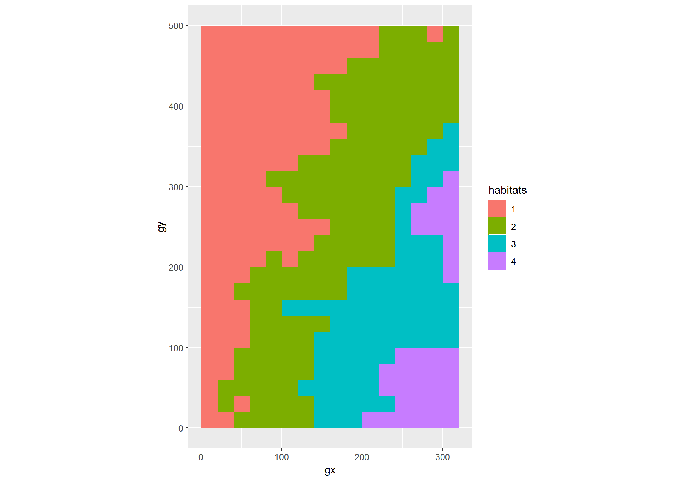

fgeo 1.0.0 release candidate
Mauro Lepore
2018-12-31
Source:vignettes/siteonly/fgeo-1-0-0-release-candidate.Rmd
fgeo-1-0-0-release-candidate.Rmdfgeo is a collection of R packages to analyze forest diversity and dynamics. Its first release is planned for February 2019. Before that, we would love you to give us some feedback, and report issues.
This post highlights the major features. For more details please see the Example and Reference sections.
Explore fgeo
Use fgeo_help() to search documentation. It is similar to utils::help.search() but specific for fgeo.
Access and manipulate data
fgeo comes with small datasets for examples. When you use fgeo you can also use many datasets directly.
library(fgeo)
#> -- Attaching packages ----------------------------------------------- fgeo 0.0.0.9002 --
#> v fgeo.analyze 0.0.0.9003 v fgeo.tool 0.0.0.9005
#> v fgeo.plot 0.0.0.9402 v fgeo.x 0.0.0.9000
#> -- Conflicts ------------------------------------------------------- fgeo_conflicts() --
#> x fgeo.tool::filter() masks stats::filter()
tree5
#> # A tibble: 30 x 19
#> treeID stemID tag StemTag sp quadrat gx gy MeasureID CensusID
#> <int> <int> <chr> <chr> <chr> <chr> <dbl> <dbl> <int> <int>
#> 1 7624 160987 1089~ 175325 TRIP~ 722 139. 425. 486675 5
#> 2 8055 10036 1094~ 109482 CECS~ 522 94.8 424. 468874 5
#> 3 19930 117849 1234~ 165576 CASA~ 425 61.3 496. 471979 5
#> 4 23746 29677 14473 14473 PREM~ 617 100. 328. 442571 5
#> 5 31702 39793 22889 22889 SLOB~ 304 53.8 73.8 447307 5
#> 6 35355 44026 27538 27538 SLOB~ 1106 203. 110. 449169 5
#> 7 35891 44634 282 282 DACE~ 901 172. 14.7 434266 5
#> 8 39705 48888 33371 33370 CASS~ 1010 184. 194. 451067 5
#> 9 50184 60798 5830 5830 MATD~ 1007 191. 132. 437645 5
#> 10 57380 155867 66962 171649 SLOB~ 1414 274. 279. 459427 5
#> # ... with 20 more rows, and 9 more variables: dbh <dbl>, pom <chr>,
#> # hom <dbl>, ExactDate <date>, DFstatus <chr>, codes <chr>,
#> # nostems <dbl>, status <chr>, date <dbl>Other datasets are stored in R’s library. You can access them with example_path().
example_path("rdata")
#> [1] "C:/Users/LeporeM/Documents/R/R-3.5.1/library/fgeo.x/extdata/rdata"
dir(example_path("rdata"))
#> [1] "tree5.RData" "tree6.RData"Larger datasets live online. You can download them with download_data().
download_data("luquillo_tree5_random")
#> # A tibble: 1,000 x 19
#> treeID stemID tag StemTag sp quadrat gx gy MeasureID CensusID
#> <int> <int> <chr> <chr> <chr> <chr> <dbl> <dbl> <int> <int>
#> 1 104 143 10009 10009 DACE~ 113 10.3 245. 439947 5
#> 2 119 158 1001~ 100104 MYRS~ 1021 183. 410. 466597 5
#> 3 180 225 1001~ 100174 CASA~ 921 165. 410. 466623 5
#> 4 602 736 1006~ 100649 GUAG~ 821 149. 414. 466727 5
#> 5 631 775 10069 10069 PREM~ 213 38.3 245. 439989 5
#> 6 647 793 1007~ 100708 SCHM~ 821 143. 411. 466743 5
#> 7 1086 1339 10122 10122 DRYG~ 413 68.9 253. 440021 5
#> 8 1144 1410 1012~ 101285 SCHM~ 920 161. 395. 466889 5
#> 9 1168 1438 10131 10131 DACE~ 413 70.6 252. 440031 5
#> 10 1380 114352 1015~ 149529 CASA~ 820 142. 386. 466957 5
#> # ... with 990 more rows, and 9 more variables: dbh <dbl>, pom <chr>,
#> # hom <dbl>, ExactDate <date>, DFstatus <chr>, codes <chr>,
#> # nostems <dbl>, status <chr>, date <dbl>Use read_vft() to read your own ViewFullTable. Compared to utils::read.csv() it is easier to use and safer.
(viewfulltable_file <- example_path("view/vft_4quad.csv"))
#> [1] "C:/Users/LeporeM/Documents/R/R-3.5.1/library/fgeo.x/extdata/view/vft_4quad.csv"
read_vft(viewfulltable_file)
#> # A tibble: 500 x 32
#> DBHID PlotName PlotID Family Genus SpeciesName Mnemonic Subspecies
#> <int> <chr> <int> <chr> <chr> <chr> <chr> <chr>
#> 1 385164 luquillo 1 Rubia~ Psyc~ brachiata PSYBRA <NA>
#> 2 385261 luquillo 1 Urtic~ Cecr~ schreberia~ CECSCH <NA>
#> 3 384600 luquillo 1 Rubia~ Psyc~ brachiata PSYBRA <NA>
#> 4 608789 luquillo 1 Rubia~ Psyc~ berteroana PSYBER <NA>
#> 5 388579 luquillo 1 Areca~ Pres~ acuminata PREMON <NA>
#> 6 384626 luquillo 1 Arali~ Sche~ morototoni SCHMOR <NA>
#> 7 410958 luquillo 1 Rubia~ Psyc~ brachiata PSYBRA <NA>
#> 8 385102 luquillo 1 Piper~ Piper glabrescens PIPGLA <NA>
#> 9 353163 luquillo 1 Areca~ Pres~ acuminata PREMON <NA>
#> 10 481018 luquillo 1 Salic~ Case~ arborea CASARB <NA>
#> # ... with 490 more rows, and 24 more variables: SpeciesID <int>,
#> # SubspeciesID <chr>, QuadratName <chr>, QuadratID <int>, PX <dbl>,
#> # PY <dbl>, QX <dbl>, QY <dbl>, TreeID <int>, Tag <chr>, StemID <int>,
#> # StemNumber <int>, StemTag <int>, PrimaryStem <chr>, CensusID <int>,
#> # PlotCensusNumber <int>, DBH <dbl>, HOM <dbl>, ExactDate <date>,
#> # Date <int>, ListOfTSM <chr>, HighHOM <int>, LargeStem <chr>,
#> # Status <chr>Use rdata_list() to read multiple censuses at once.
(census_files <- example_path("rdata"))
#> [1] "C:/Users/LeporeM/Documents/R/R-3.5.1/library/fgeo.x/extdata/rdata"
dir(census_files)
#> [1] "tree5.RData" "tree6.RData"
rdata_list(census_files)
#> $tree5
#> # A tibble: 3 x 19
#> treeID stemID tag StemTag sp quadrat gx gy MeasureID CensusID
#> <int> <int> <chr> <chr> <chr> <chr> <dbl> <dbl> <int> <int>
#> 1 104 143 10009 10009 DACE~ 113 10.3 245. 439947 5
#> 2 119 158 1001~ 100104 MYRS~ 1021 183. 410. 466597 5
#> 3 180 225 1001~ 100174 CASA~ 921 165. 410. 466623 5
#> # ... with 9 more variables: dbh <dbl>, pom <chr>, hom <dbl>,
#> # ExactDate <date>, DFstatus <chr>, codes <chr>, nostems <dbl>,
#> # status <chr>, date <dbl>
#>
#> $tree6
#> # A tibble: 3 x 19
#> treeID stemID tag StemTag sp quadrat gx gy MeasureID CensusID
#> <int> <int> <chr> <chr> <chr> <chr> <dbl> <dbl> <int> <int>
#> 1 104 143 10009 10009 DACE~ 113 10.3 245. 582850 6
#> 2 119 158 1001~ 100104 MYRS~ 1021 183. 410. 578696 6
#> 3 180 225 1001~ 100174 CASA~ 921 165. 410. 617049 6
#> # ... with 9 more variables: dbh <dbl>, pom <chr>, hom <dbl>,
#> # ExactDate <date>, DFstatus <chr>, codes <chr>, nostems <dbl>,
#> # status <chr>, date <dbl>Plot
# Using only two species to keep the example small
two_species <- c("PREMON", "CASARB")
# The pipe operator (`%>%`) can make your code easier to read
census <- download_data("luquillo_stem6_random") %>%
filter(sp %in% two_species)Use autoplot() to plot different classes of ForestGEO data. For example:

# Using `data()` just for clarity
data("habitat")
class(habitat)
#> [1] "fgeo_habitat" "tbl_df" "tbl" "data.frame"
autoplot(habitat)
Analyze
The available analyses include abundance, mortality, and species-habitat association.
census %>%
pick_main_stem() %>%
group_by(sp) %>%
abundance()
#> # A tibble: 2 x 2
#> # Groups: sp [2]
#> sp n
#> <chr> <int>
#> 1 CASARB 94
#> 2 PREMON 252data("tree5")
data("tree6")
to_df(
mortality_ctfs(tree5, tree6)
)
#> Detected dbh ranges:
#> * `census1` = 10.9-323.
#> * `census2` = 10.5-347.
#> Using dbh `mindbh = 0` and above.
#> # A tibble: 1 x 9
#> N D rate lower upper time date1 date2 dbhmean
#> <dbl> <dbl> <dbl> <dbl> <dbl> <dbl> <dbl> <dbl> <dbl>
#> 1 27 1 0.00834 0.00195 0.0448 4.52 18938. 20590. 101.tree <- download_data("luquillo_tree5_random")
data("habitat")
summary(
tt_test(tree, habitat)
)
#> Using `plotdim = c(320, 500)`. To change this value see `?tt_test()`.
#> Using `gridsize = 20`. To change this value see `?tt_test()`.
#> # A tibble: 73 x 5
#> species habitat_1 habitat_2 habitat_3 habitat_4
#> * <chr> <chr> <chr> <chr> <chr>
#> 1 DACEXC repelled neutral neutral neutral
#> 2 MYRSPL neutral aggregated neutral repelled
#> 3 CASARB neutral neutral neutral neutral
#> 4 GUAGUI neutral neutral repelled repelled
#> 5 PREMON neutral neutral neutral neutral
#> 6 SCHMOR neutral neutral neutral neutral
#> 7 DRYGLA neutral repelled repelled neutral
#> 8 HOMRAC neutral neutral neutral repelled
#> 9 OCOLEU neutral neutral neutral repelled
#> 10 MANBID neutral neutral neutral neutral
#> # ... with 63 more rows